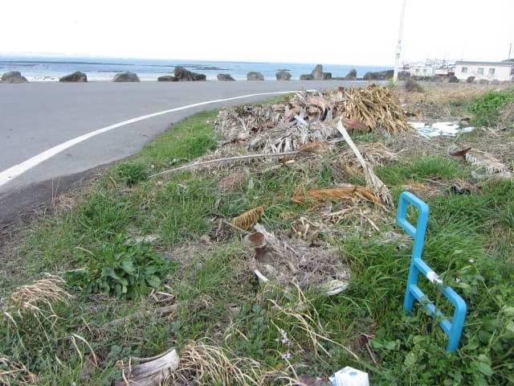

在「속풀이해장국」餐館吃完滋味的豬雜湯飯, 便慢慢步行往酒店, 準備乘 701 號巴士往下一個停留城市 – 城山 (Seongsan), 也是我們在濟州島的第四個停留城市。
步行一會便返回酒店。在一樓大堂稍作休息後, 往服務台取回今早寄放的行李, 於下午二時負起背囊, 離開住宿了一晚的雷森觀光酒店。
표선초등학교 (表善小學)巴士站
離開酒店, 走過馬路, 再往前走一會便來到 표선초등학교 (表善小學)巴士站, 準備乘 701號巴士往城山。
巴士站內有一對母子也正在等候巴士, 應該是那位母親接兒子放學吧。看見他們的相處, 就好像一對朋友, 現在的小朋友真幸福。小朋友在附近的學校就讀, 懂小小英文, 但只限於簡單和極有限的單字, 不能溝通, 也許是害羞的原因。
小朋友的媽媽頗為健談, 只可惜我們不憧韓語, 只可用肢體語言比手劃腳的回應。本以為她只是隨便問我們往那裡, 真想不到她是記在心的, 在巴士到站前提醒我們下車。
等了很久, 約十五分鐘吧, 一輛701號巴士緩緩駛來靠站。
登上了巴士, 車廂永遠不會擁擠的, 十分舒服, 可以閉目休息一會。
城山 (Seongsan)
巴士行駛了約二十分鐘後, 轉右穿過一個漁港, 接著駛上一道大橋, 小朋友的媽媽轉頭叫我們準備下車, 真謝謝她的熱心幫助。巴士駛過大橋後, 約下午二時五十五分在「오조해녀의집」巴士站停下來。
下了車, 望望四周, 感覺頗為荒蕪, 不像是熱鬧的地方。唯一熟悉的是馬路對面遠處, 曾經在搜集資料時看過的城山日出峰, 看來並不是很高的。
城山宿 美麗度假村(아름다운리조트 Areumdaun Resort)
我們在城山下榻 美麗度假村, 單看酒店名稱, 已給我們帶來無限美麗暇想。按地圖所示, 酒店離巴士站不太遠, 沿海邊(日出海岸)步道一直走便是, 路線十分簡單。
離開巴士站, 轉右沿馬路走, 這段路也是偶來1號小路及 GEO Trail 其中的一段。
向前走一會, 迎面是無盡大海, 令人精神為之一振。

接著沿日出海岸走。來了濟州五天了, 已經看慣了黑漆漆的石灘。
今天天色不錯, 終於可以看到碧綠色的海洋了! 真想大喊一聲, 洗去過去連續幾個下雨天的納悶!
長長的海濱步道, 十分舒服。
沿途風景很優美。
呵呵呵~~~ 看到牛島了! 只希望明天天公造美, 讓我們可以按原定計劃往牛島。

繼續向前走。前面的海邊有十多棟不高的大樓, 估計美麗度假村便在那裡, 環境真是不錯呢!
沿途風景太美了, 盡量放慢腳步細心欣賞, 也不太急於往酒店。
好像在城山任何角落都可以看到城山日出峰的。
走走看看, 經過幾棟酒店後, 就看到我們下榻的 美麗度假村(아름다운리조트 Areumdaun Resort)。